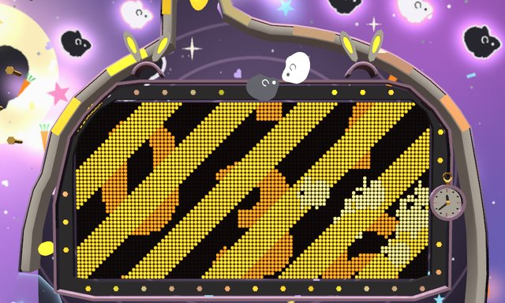
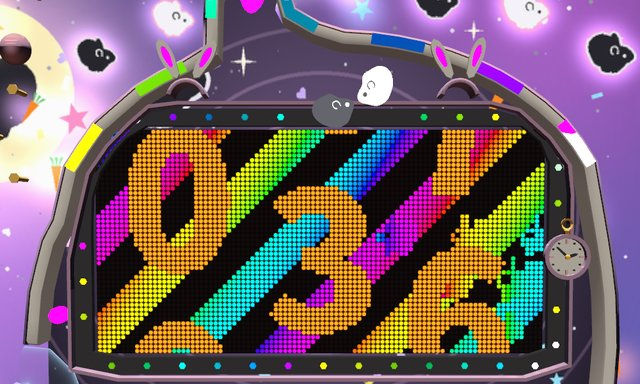
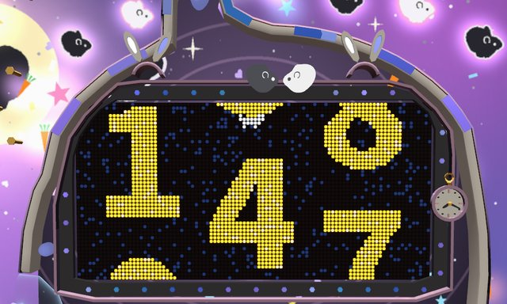
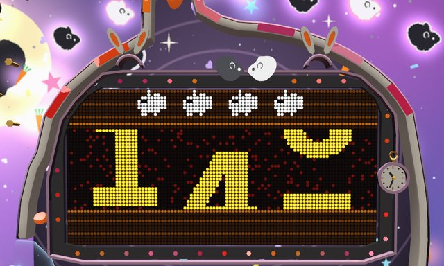
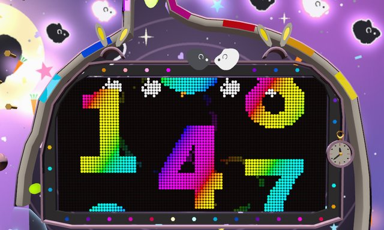
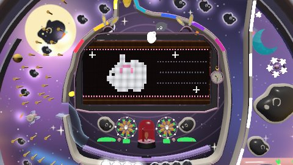

最後更新：2026-11-28（週六）
RABBIT HOLE

所有大當都會進入ST 10次的ST機。只能左打。設置在島台東端的前排和後排各2台，共4台。
規格
| 大當機率 | 1/99.0 |
|---|---|
| ST中 | 1/9.0 |
| ST | 10次（大當全部都是ST） |
| 繼續率 | 約69% |
| 回合 | 8R、3R（每R 10個計數） |
| 出珠量 | 8R約880顆、3R約330顆 |
| 賞球 | 啟動口3、電動入口3、大獎口11、入賞口4 |
| 250顆轉的次數 | 約41次（試算，含止打） |
| 機械割 | 約141%（試算） |
※盈虧平衡線調查中。
大當分配
| 入賞口 | 8R（ST） | 3R（ST） |
|---|---|---|
| 啟動口 | 15% | 85% |
| 電動入口（電チュー） | 25% | 75% |
打法
- 一直左打。盤面右側只是裝飾，沒有右打
- 啟動口兼作電動入口，耳朵形狀的翅膀打開時鋼珠比較容易進去
- 沒有通過閘門。發射的鋼珠有55%會變成普圖的保留
| 通常 | ST中 | |
|---|---|---|
| 普圖中獎 | 1/16 | 9/10 |
| 普圖變動 | 12秒 | 0.6秒 |
| 翅膀開啟 | 0.15秒×1次 | 4.0秒×2次 |
盤面與役物
顯示畫面上方有兔耳，以及會旋轉的黑白兔子。畫面下方有紅蘿蔔風車和警示燈。


ST（Rabbit RUSH）
- 大當後進入ST 10次（1/9.0）。10次內再中就繼續ST，沒中就回到通常
- 進入時會出現「ラビットRUSH!」（Rabbit RUSH！）
- ST中液晶邊框有粉紅光和白光繞圈，上方顯示剩餘次數。剩5次起開始倒數


演出信賴度
※信賴度為解析值（通常時）。50%以上和確定以紅字標示。
保留顏色
| 顏色 | 信賴度 |
|---|---|
| 藍 | 1.7% |
| 綠 | 6.8% |
| 紅 | 30.5% |
| 金 | 63.6% |
| 彩虹 | 確定 |
Reach（聽牌）
| 演出 | 信賴度 |
|---|---|
| 普通Reach | 3.1% |
| 超級Reach | 25.0% |
| 全迴轉 | 確定 |
| 最終決戰（PUSH） | 51.0% |
預告
| 顏色 | 紅蘿蔔氣球預告 | 兔群預告 |
|---|---|---|
| 整體（不分顏色） | 1.3% | 18.0% |
| 白 | 0.2% | 3.4% |
| 藍 | 0.6% | 9.9% |
| 綠 | 1.7% | 22.7% |
| 紅 | 6.1% | 52.3% |
| 金 | 22.9% | 83.5% |
| 彩虹 | 確定 | 確定 |
階段預告
| 演出 | 信賴度 |
|---|---|
| 到階段1 | 4.2% |
| 到階段2 | 10.3% |
| 到階段3 | 33.8% |
| 到階段4 | 66.7% |
| 到階段5 | 91.0% |
擬似連
| 演出 | 信賴度 |
|---|---|
| ×2 | 5.8% |
| ×3 | 28.5% |
| ×4 | 50.8% |
變動開始
| 演出 | 信賴度 |
|---|---|
| 蓄力 | 1.5% |
| 逆轉 | 3.9% |
| 顫抖 | 13.0% |
| 逐一 | 22.6% |
| 閃光 | 48.6% |
| 落下 | 1.8% |
| 吸入 | 2.1% |
| 從右邊 | 10.6% |
| 角色推入 | 41.1% |
數字的轉法
| 演出 | 信賴度 |
|---|---|
| 倒轉 | 1.3% |
| 翻頁 | 5.6% |
| 滾筒 | 8.3% |
| 洗牌 | 15.6% |
| 蹦跳 | 0.7% |
預兆（在上方奔跑的角色）
| 演出 | 信賴度 |
|---|---|
| 夥伴（3隻） | 1.1% |
| 大遊行（6隻） | 2.5% |
| 金 | 12.6% |
| 彩虹 | 65.6% |
Reach中的預告
| 演出 | 信賴度 |
|---|---|
| 紅蘿蔔氣球預告 | 14.5% |
| 兔群預告 | 29.8% |
超級Reach的後半
| 演出 | 信賴度 |
|---|---|
| 互推 | 18.2% |
| 追逐 | 11.1% |
| 鑽頭 | 53.9% |
| 鑽洞 | 33.4% |
普通Reach的呈現
| 演出 | 信賴度 |
|---|---|
| 標準 | 2.4% |
| 彈跳 | 4.2% |
Reach的結束方式
| 演出 | 信賴度 |
|---|---|
| 硬停 | 6.4% |
| 滑動 | 18.5% |
| 退回 | 21.4% |
| 搖晃 | 9.2% |
| 最後一刻停住 | 29.0% |
機會目
| 演出 | 信賴度 |
|---|---|
| 311（後面的保留會中） | 68.7% |
確定演出
彩虹保留、黑屏、變動開始時的警示燈、復活、凍結、全滅燈、兔子倒退走
兔子倒退走是普通Reach中，上方橫帶的兔子倒著走的演出。
演出解說
數字
數字是粉色的圓鼓鼓的字。平常的轉法是「蹦跳」，數字跳起來換掉。
保留
保留燈在顯示屏下方。從金色開始算激熱，虹色是確定。

預告
紅蘿蔔氣球預告偏弱，兔群預告偏熱。顏色分6階，兔群的紅色起就是激熱，彩虹則是確定。




階段預告
上方橫帶的兔子會一隻一隻增加。第4階是捲門，第5階數字會變成彩虹色。



擬似連
以連號停下，蓄力之後出現「もう一回!」（再來一次！）並重新變動。文字顏色會依序升為綠、紅、金。


超級Reach的流程
- Reach和超級Reach的顏色是粉色。普通Reach的呈現是標準和彈跳
- 超級Reach的後半型態是追逐、互推、鑽洞、鑽頭
- 鑽洞：中間的數字掉進下面的洞，換成別的數字跳出來。4次



最終決戰與PUSH
最終決戰時，要按下出現在點陣顯示前面的PUSH按鈕。


特殊演出、隱藏要素、小情報
※有劇透。點一下展開
特殊演出（確定大當）
| 演出 | 內容 |
|---|---|
| 兔子倒退走 | 普通Reach中，上方橫帶的兔子會倒著走 |
| 黑屏 | 變動開始時畫面暗很久，然後直接進入全迴轉 |
| 凍結 | 變動開始的同時一切停止、聲音消失，接著發光並直接進入全迴轉 |
| 全滅燈 | 液晶和機台的燈飾全部熄滅、聲音也消失，接著發光並直接進入全迴轉 |
| 變動開始時的警示燈 | 一開始轉動就轉起警示燈 |
| 彩虹 | 彩虹保留、彩虹預告（紅蘿蔔氣球、兔群） |
| 全迴轉 | 只在黑屏、凍結、全滅燈之後出現。以333或777連線。轉到最後，維持彩虹色停止 |
| 復活 | 超級Reach中先裝成沒中，之後才中 |


隱藏要素
- 8R升格：3R大當結束時會出現「昇格チャンス」（升格機會），輪盤會在3R和8R之間旋轉。停在8R就升格。8R中有60%是先裝成3R再升格，真正的3R中有25%是挑戰升格卻失敗
- 保留先讀：保留進來時，看到的顏色可能比真正的顏色低1〜2階。等待期間會一階一階往上升，沒升完的部分會在變動開始時的機會提升中補上。如果變動開始時只有白色保留閃一下，那就是假的
- 機會區：先讀的區域。前面有2個以上保留時才會出現。沒中時只會出在會變成超級Reach的那一轉
小情報
- 機會目311：沒有Reach的落空中，如果停在311就會發出金光並彈跳。不會碰巧停在311
- ST中不會出現預告、階段預告、擬似連、變動開始演出
數據顯示器

機台上方有大當、連莊、開始、上次4項和店內人數。